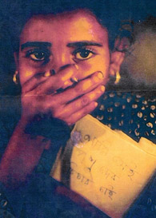
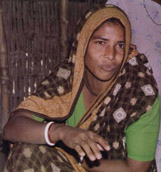
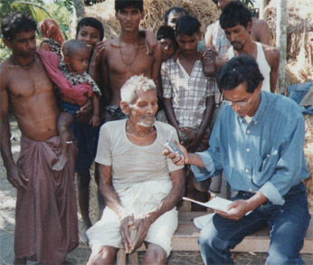
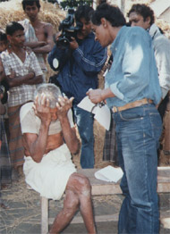

|
|
|
|
|
|
|
|
|
|
|
|
|
|||
|
|
||||
|
|
Trip To Bhola: Annada Prasad Cries in Silence & Anguish Published on April 2, 2003 Bhola a remote district from the capital surrounded by on all sides rivers and riverines, on the south lies the Bay of Bengal, is made of coastal plain land not much above 5 ft from sea level. On the eastern side the mighty Meghna flows into Bay, whereas on the north and western side river Tetulia, a branch of Meghna falls into Bay. From this point of view it is an island floating on the bay.
The district administration extends main Bhola and a few islands (chars) including Rajapur, Gangapur, Charpatila, Dhal Char, Char Nijam, and Monpura. The district consists of six upazilas or thanas (police station) : Bhola Sadar, Daulatkhan, Bohranuddin, Tazumuddin, Lalmohan, Charfashion, and Manpura. Bhola has four constituencies in the Parliament: Bhola 1 consisting Bhola Sadar upazila, Bhola 2 consisting of Daulatpur and Bohranuddin upazilas, Bhola 3 consisting of Tazumuddin & Lalmohan upazilas, and Bhola 4 consisting of Charfashion & Manpura upazilas. Our trip mainly confined to three villages under Lord Hardinge union of Lalmohan upazila (police station) in the district concerned with the collection of some facts of affected families belonging to minority communities in post election violence against minorities in the night of 2nd October and the following day. We concentrated our survey on Annada Prasad village, as it was the most affected area. The village has about 22 hundred Hindu voters, assuming each family has 4 voters number of families would be more than 500. On the day before election i.e. on 30th
September, the villagers who were preparing mentally to go to the nearest
polling booth (a primary school selected for booth) for voting to a candidate
of their choice, could not imagine what a horrible experience were awaiting
for them on the following two days. On 30th September the minority voters were
cautioned and threatened of serious consequences if they go to the booth and
cast vote in favour of symbol 'Boat'. Most of the Hindu voters took the
warning seriously, but some did go to vote. On the Election Day, these willing
Hindu voters were intercepted on the way and refused entering the booth by a
group of terrorists. The trouble started there. Sensing trouble these people
turned back. But they did not know at that time what were coming next. The
story is harrowing as is gradually revealed to us by those who went through
these horror continued for two days. They recalled that even in the worst days
of 1971 when Pakistani soldiers were committing sin against Bengali population
number of enmasse raping was very limited compared to what happened in Annada
Prasad.
Lalmohan Thana is about 45 km from Bhola town directly south lying on a Bhola-Charfashion metalled road stretching north-south. About a kilometer further south lies a small bazar Kartar Bazar from where a small side road branching off from the main road towards east leads to Lord Hardinge, the union head quarter about 2-3 km from Lalmohan. Midway between Lord Hardinge and GM Bazar (also known as Annada Prasad Bazar) lies another small bazar named Rai-Chand. From this bazar a village 'local board' road (but motorable) slightly south-east, leads to GM Bazar (Goona Moni Bazar),- a small bazar with few shops of thatched roof, a small tea stall as well. At this Bazar a police sub-station has been set by the district SP authority following the large scale violence at and around Lord Hardinge union with very much disliking of the local BNP leaders and their armed followers. Only seven sepoys are deployed there for patrolling and keeping peace in the area. General complain is however that police prefer most of the time gossiping and drinking teas with the known cadres against whom they were deployed to work. It is a chilly December morning of 28th December at 11 a.m. with lot of sunshine we reached Annada Prasad village, which is now internationally known locality where inhuman and barbaric acts of violence have been committed against hundreds of innocent families of Hindu minorities. The violence that took place following the general election on 1st October continued for more than 36 hours have all character- ransacking and destruction of residence small or big, hut or tin-shed made little difference to the perpetrators, looting of all kind of properties, utensils, food-grains, clothing, cash money & gold ornaments wherever available, physical torture, molestation of chastity, and gang raping. But what is the offence of these simple god-fearing people? Why should they be exposed to such humiliating and atrocious inhuman treatment by the armed cadres of victorious BNP-led 4 party alliance. This the question we asked to both the victims and the alleged perpetrators committing violence against them. The victims' typical answer(s) was "we don't know Babu; may be they doubted that we cast votes in favour of Boat. But honestly speaking Babu, we didn't go even near the poling booth." The alleged perpetrators' typical answer(s) was, " no sir, nothing serious happened here. For some unknown reason, they got panicky and fled away from their homes. As a result some miscreants might have, taking advantage of the situation looted some properties from the vacant quarters, but nothing serious. Only one or two cases might be." When we entered the house of Gajendra
his wife Tinkubala, being introduced by a local journalist to the visiting
team, were overwhelmed with surprise and joy. They welcomed us with tears in
their eyes. The couple, parents of the wretched girl, a victim of gang rape
committed by at least 4-5 persons, with tears and fear in their eyes narrated
the whole story of the dreadful night of 2nd October. The little pretty girl
aged between 8-9 years named Momota, is now hiding in an undisclosed address
for her personal safety. Gauranga, a simple looking thin statured mid aged
man, is a day labourer having no land or house of his own. The couple has two
daughters Momota being eldest. The family lives in a cottage constructed on a
piece of land within the house complex of Subal Chandra, locally known as 'Subal
Dokandarer Bari' (house complex of Subal grocer).
 Momota, a student of class III or IV used to go to a nearby primary school (GM School) before the dreadful event that completely shattered her life pattern. She didn't know what is called 'Bhot', BNP or AL, nor she has any concept of democracy, election, nor does she understand the meaning of those terrible symbols 'Dhaner Shis' (ear of paddy), Dari Palla (balance), and 'Nauka' (boat). She took shelter in a near by "house complex" locally called Vendar Bari (also called Dwip Bari or Mistry Bari) with her parents. The Vendar Bari was thought to be a relatively safe place as the complex is surrounded with knee deep water of the agricultural fields, even in month of October. The head of the complex, an elderly and respected gentleman of 75-year-old named Nagendra Chandra Das, whose fore father was once a Vendor (dealer of land documents used for registration during sale-purchase deeds) gave shelter not less than hundred women of different ages. When the terrorists numbering around hundred armed with different kinds of lethal weapons including fire arms and bombs attacked the complex dividing themselves into different groups of about ten or so Momota was hiding herself behind the side of a concrete well embracing a small doll in her chest. At about 11 p.m. she was discovered by a gang of 5-6 young men who dragged her to near by field. They raped her for more than half an hour and returned her to Vendar Bari complex. During this sexual assault she cried for help but no body dare to come to her rescue, nor she could draw any mercy of the sex-maniacs. She however could identify, later disclosed to the police, these goondas. The panic stricken family on return to their cottage on the following day found that their cottage destroyed, whatever they had a sum of Tk 700/-, Rice two monds, a radio set and clothing. The family is completely ruined having no penny. They are now living on collecting left out corns on the paddy field after the harvest. It is further learnt that while describing the event Momota disclosed that on the dreadful night the goondas even did not spare her mother from sexual violence, although her mother when asked now keep mum neither denying nor admitting verbally. But expression of her face even after so many days is a clear indication that she even was not spared by the goondas. As she became ill her parents took her to Lalmohan Thana Health Complex, where she was given medical checkup and treatment. With the help of the doctors the Lalmohan police took the case of Momota. She was in the hospital for 12 days. According to FIR and the Lalmohan Ps source, two accused were arrested namely Selim, a local well known mastan and his accomplice Dulal another local mastan. The team then moved to Abani Daser (or Labani Daser ? ) about a farlong from the house of Subal grocer, where hearing our arrival gathered quite a few villagers to tell their story. Every one is eager to tell the horror of their experience. One such person is Sujan Das, a day laborer narrated that he had been robbed of every thing including his shirts and lungis. Liton Chandra Das, Sudeb Chandra Das , Pinaki Das and like them 30-40 persons took shelter at Ganga Charan Daser Bari (House of Gangacharan). All of them robbed of their properties, and houses ransacked. Families of Sudarsan manegere'r bari (House of Sudrasan Maneger) took shelter in Annda Prasad from the adjacent Fatemabad village just after election for fear. Sushil Chandra Das son of late Ananta Das, a member of one such families informed us that in their complex, houses of all families were looted- including food grains, Dals, dried chilies, poltries, and ransacked the structures of their houses. When our learned professor of the team asked him why they are not returning to own village, Sunil who has four family members including two sons said in a very low voice that there are no Hindus now in that village. "if our family goes back, they will extort money from us''. When asked who are those 'they', Sunil kept mum. "Bangldesh is not for you."- threatened them two local mastans. One of them is a son of Yasin Master, a very influential man of the locality, and another is "Bellal", both were arrested on charge of looting and raping. But he then hurriedly added that one of them 'Bellal' has been released on bail. The hooligans of the area, he alleged, get support from local BNP leaders like Yasin Master and Abul Kasem. Jesmin, and her husband live here within the complex. When we arrived at the complex we were informed that Jesmin was taking her bath in nearby pond. As she completed her bath we kept on listening to peoples gathered around us, numbering not less than thirty. All are eager to tell their version of that dreadful night of October 2. Story is similar, pathetically identical; pattern of repression and torture, in many cases repeated several times. Swapan Das, son of late Atul Das used to live in his village home with peace and tranquility. He never dreamt that after Babri Mosque reaction in 1992, similar thing in larger scale could befall on them. Swapan, head of his family of 4 members including two daughters and his wife is a poor cultivator having some lands of his own. On the dreadful night everything he had were robbed off. The House complex is known as 'Nishikanter House'; Nishikanta was his grandfather. Now he is penniless. Our female member of the team privately
talked to Jesmin in a small room used as Thakur Ghar. Story of Jesmin is no
exception- being robbed of her nakful (nose ring) symbolizing the loss of her
greatest wealth, the chastity on that dreadful night of October 2. Jesmin (35)
daughter of Matilal-Sadarani couple and wife of Subas Chandra Das with other
family members fled away from their home to a nearby house known as 'Gangacharaner
Bari' for shelter in the evening of election day i.e. October 1, out of Fear.
 The reason of fear is that the miscreants, allegedly supporters of 4-party alliance demanded a handsome amount of taka as subscription a few days before general election. According to her FIR report, on the early morning around 2 a.m. of October 2, about 18-20 persons attacked the Gangacharan house complex. The inmates of the house including who took shelter there started fleeing in all directions. She fled away to a nearby paddy field submerged with water. But the goondas dragged her and asked 'where is your daughter?' As she answered negative about the whereabouts of her young daughter, the goondas beat her, hacked her with a chopper here and there, and finally snatched away her nakful (symbolizing the loss of her chastity). She could recognize at least 3 persons. After then the goondas dragged her to house and once again two persons looted her honour in nearby turmeric field (Haldi khet). 'I was left at the turmeric garden whole night', being unable to move alone, she narrated with tears in her eyes. She was then taken to a nearest health complex at Lalmohan where she spent 9 days receiving medical treatment. Out of fear, she however sent her daughter to a safer place out of Bhola. Not only she lost her personal wealth; her properties left at her house were looted. Her husband has filed a case of looting, rioting etc in Lalmohan Ps against at least 10 persons. Jesmin herself filed another case of violation of chastity in the same Police station. We had no language to solace this courageous disabled lady having lost one leg long time back. But to save her daughter from the hands of the goondas she sent her daughter to an undisclosed address. The team then moved to Gangaramer Bari
where Jesmin's family with her grown up daughter took shelter. The house
complex shows the sign of nobility and old tradition. The complex is now know
as Brojarajkumarer Bari. Brojorajkumar is now the eldest descendent of his
fore father Gangaram Charan Das. The family once used to be known as Talukdar
family. In this complex now lives 3 families all are related to each other.
Brojorajkumar Babu, an elderly man of 108 years age is well-respected person
of the locality. Once the family was very large; now his family members
reduced to 12. In the last communal disturbance of 1992, 22 members of his own
family left for West Bengal permanently. The old gentleman disclosed to our
professor that their family had great tradition and well respected once, but
now the new youngsters and new settlers ignore him and even insult him having
no respect for the local people. Unfortunately these new settlers now control
the social and political activities of the locality in which they have no say.
As our Professor talked to him he showed his wide knowledge in history,
tradition and culture not only of his locality but also of whole of Bengal and
the Indian Subcontinent. He proudly stated that he saw the Victorian age of
British Raj and its nobility. Brojorajkumar babu said his family belongs to
Das caste and of Kashyap gotra of Sanatan Dharma (now known as Hinduism). When
the miscreants of the locality offered him & his family's safety many a time
in lieu of their conversion to Islam, Brojorajkumar rejected the idea
forthwith. Another senior member, a well known political and social leader, of
our team when asked the grand old man why BNP cadres turned on them even when
their candidate won the seat. The gentleman looked up pointing his forefinger
to the open sky meaning, "HE knows". When some one told him that to "HIM" all
are equal, why should then you poor people would be tortured inhumanly?
 He kept silent giving a faint smile. As our video team stated recording his description of unimaginable torture on his person and the people who took shelter in his complex including the womenfolk, he burst into tears. And for the first time he succumbed to emotion, and on all a sudden he fell down from his siting small stool. The perpetrators not only robbed all their belongings and properties, they mercilessly beat him with iron rod on legs, hands, chest and on the back. The beating sign on his back still exists as he showed it to us. The location is still swelling and sensitive. He needs immediate medical treatment. But who will come forward not only with money but good will and courage. I personally have no faith on "uparwalla" (the God Almighty), but even then if I see that 'HIM', I would just tell him that there is no reason for your great presence in the Universe. We talked to many persons assembled there to tell their experience of horror. But with little time left as the winter sun setting down western horizon, we left Brojorajkumar babu on his fate and moved to another locality called Howladarer Bari, another place of horror.  When we arrived at Utfulla Howlader's house the sun is few degrees above the horizon. Atmosphere calm, the western sky is getting red. The head of the family Mr. Howlader, who already got the message of our arrival at Annada Prasad, warmly received from the earthen path leading to his home. We all sat on a wooden bench scattered around the yard. In side Howladar complex lives three family. Utfulla Babu's family, it appears, is a well to do. The members of the family fled away from the complex on 2nd October. The hooligans as usual looted every thing including TV sets, gold ornaments, cash money wherever available, rice, dried chilies, betel-nuts and other agricultural products. However, none of the girls were physically or otherwise tortured, many male members and youths were beaten alleging that they have cast votes in favour of boat. Monoranjan Das (55), head of another family in the complex, nephew of Utfulla Babu, narrated the same story. He on behalf of the entire complex members filed a case of looting and rioting with Lalmohan Ps. According to Chitta babu, from the morning 11 a.m. of 2nd October problem started. The waves of assault by the hooligans armed with lethal weapons carried in a 4 and 5 groups at least 4-5 times. At about 11 a.m., according to Chittaranjan, an armed group from across a nearby canal from the west entered the complex and started beating one inmates (Ratan) of the complex. Another man Suruj was beaten at the side of the canal. The terrorists numbered about 20-30 of ages between 14-20. "We fled away as they entered the complex, and saw from distance that miscreants looting our properties." In another assault about 30-40 miscreants took part and looted the properties at about 8 p.m. At least 9 accused were identified of which one was arrested. The family-head entertained us with refreshing drink 'green coconut' water. We were so tired that the drink acted as tonic and created a new zeal among the volunteers.
|
|
||
|
|
|
|||